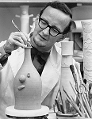
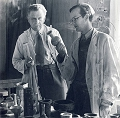

Stig Fredrik Sigurd Lindberg
Svensk illustratör och formgivare, lärare vid Konstfack, hedersprofessor. Blev högst 65 år.
| Född: | 1916-08-17 Umeå, Umeå sfs, Umeå stad. [1] | |
|---|
| Döpt: | 1916-09-17 Umeå, Umeå sfs, Umeå stad. [2] | |
|---|
| Levde: | 1919 Umeå, Umeå sfs, Umeå stad. [3] | |
|---|
| Examen: | 1935-05 Jönköping. | |
|---|
| Frikallad: | 1936 Järfven 3, Umeå, Umeå sfs, Umeå stad. [4] | |
|---|
| Utflyttad till: | 1938-01-28 Sankta Klara fs, Stockholms stad. [4] | Utflyttn.attest 54/1938 |
|---|
| Änkling: | 1975-05-19 Värmdög 4, Gustavsberg, Gustavsbergs fs, Gustavsbergs kn. [5] | |
|---|
| Död: | 1982-04 San Felice, Ciceo, Italien. | Påsken 1982, 66 år gammal, avled han i hjärtinfarkt i sitt hem i San Felice Circeo i Italien |
|---|
| Vigsel: | 1939-10-14. [5] |
|---|
| Levde: | 1971 Värmdög 4, Gustavsberg, Gustavsbergs fs, Gustavsbergs kn. [6] |
|---|
Noteringar
Stig Lindberg, född 17 augusti 1916 i Umeå, död 7 april 1982 i San Felice Circeo-Terracina Italien, var en mångsidig svensk illustratör och formgivare huvudsakligen inom området keramik.
Uppväxt och studier
Stig Lindberg föddes i Umeå som femte och sista barn till makarna Helof och Lydia Lindberg. Han tog studenten 1935 i Jönköping och började samma år på Tekniska skolan (Konstfack) i Stockholm. 1936, bara 20 år gammal hade han sin första kontakt med Gustavsbergs porslinfabrik utanför Stockholm. Fabriken gick dåligt och dåvarande chefen för fabriken kunde inte ens lova en sommarpraktikantanställning, varpå den självsäkre unge Lindberg svarade: "Om ni anställer mig så skall jag se till att det blir jobb på fabriken". Under två sommarmånader fick han visa för Gustavsbergs konstnärlige ledare Wilhelm Kåge vad han kunde, därefter blev han Kåges elev, karriären började och många jobb skulle det bli på fabriken.
Liv och verk
Under tidigt 1940-tal formgav Lindberg skulpturer i chamotte som Susanna i badet och trädkvinnan Daphne. Ett urval av dessa gjordes sedan i parian under 1970-talet. Redan 1942 blev Stig Lindbergs fajanser kända för den konstintresserade allmänheten genom utställningen "Fajanser målade i vår". Från 1947-1949 formgav han glas åt Målerås glasbruk och textilier åt Nordiska Kompaniet NK, och arbetade samtidigt som bokillustratör. 1949 efterträdde han Wilhelm Kåge som konstnärlig ledare på Gustavsberg. Under de följande åren introducerade han flera nya keramikserier som den eleganta Pungo (1953), den grafiska Domino (1955), den flamfasta Terma (1955) och en mängd vardagsporslin. På Gustavsberg tillverkades även föremål i plast som Lindberg formgav, t. ex. serveringsbrickan Kvartett (1959), termosen Termic (1957) och Sparbössehunden till Handelsbanken. Han ritade spelkort, textilmönster och omslagspapper ¿ inga uppdrag var för små för Stig Lindberg.
År 1957 lämnade Lindberg sin post som konstnärlig ledare på Gustavsberg och blev huvudlärare i keramik vid Konstfack fram till 1972. Två av hans mera kända elever är glaskonstnärerna Ulrica Hydman-Vallien och Bertil Vallien. Under tiden på Konstfack formgav han glas åt Kosta glasbruk och danska Holmegaard Glasværk samtidigt som han designade vardagsporslin och mycket annat för Gustavsberg.
Några av hans mer kända serviser är: Aveny, Berså, Birka, Coq, Kanton, Linnea, Löv, Spisa Ribb, Traktör och Åland. De flesta är idag hett eftertraktade designklassiker på auktioner och samlarmässor, som den hos svenska folket så älskade porslinsserien Berså. Han fortsatte att illustrera barnböcker, här skall bara nämnas Lennart Hellsings Nyfiken i en strut och Krakel spektakel.
Stig Lindberg arbetade även som industridesigner. 1959 formgav han en TV-apparat med vridbar skärm Lumavision för Luma och 1962 en transistorradio till samma företag. Han var gärna anlitad konstnär att utsmycka offentlig miljö, där hans sista arbete var två keramiska väggar i Hotell Al Rashid i Bagdad 1981.
Åren 1971-1980 var Stig Lindberg åter konstnärlig ledare på Gustavsberg. Därefter flyttade han till Italien där han, liksom i sin sommarbostad i Domsten, fortsatte att arbeta i sin studio. 1974 insjuknade han i lungcancer men återhämtade sig. Påsken 1982, 66 år gammal, avled han i hjärtinfarkt i sitt hem i San Felice Circeo i Italien. Han lämnar efter sig en rik produktion av former, färger och illustrationer som inte återspeglar det typisk skandinaviska formspråket, stram och sval, utan är mera lekfull, färgglatt och humoristiskt.
Några utmärkelser
1948 Guldmedalj Triennalen
1951 och 1954 Grand Prix Triennalen
1954 Guldmedalj Konstindustriutställningen Madrid
1955 Guldmedalj vid Första Internationella Keramikfestivalen i Cannes
1962 Guldmedalj vid Första Internationella Keramikfestivalen i Prag
1968 Prins Eugen-medaljen
1970 Hedersprofessor av regeringen
Hans arbeten finns bl.a. på
Nationalmuseum, Stockholm
Nordiska museet, Stockholm
Röhsska konstslöjdmuseet, Göteborg
Konstindustrimuseum, Oslo och Trondheim
The Museum of Modern Art, New York
Victoria and Albert Museum, London
Litteratur och källor
Eronn, Gisela (2003). Tusenkonstnären Stig Lindberg. Stockholm: Prisma. ISBN 91-518-4100-2
Stig Lindberg (utställningskatalog), Nationalmuseum, 2006
Stig Lindberg i Gustavsberg, Gösta Arvidsson, Gustavsbergs porslinsmuseum, 2006
Stig Lindberg ¿ en Folkhemmets formgivare, Margareta Norlin, Plantago Media, 2007
Externa länkar
www.designonline.se/Designers/sek1/Stig+Lindberg
sv.wikipedia.org/wiki/Stig_Lindberg
www.signaturer.se/Porslin/Lankar/Stig/stiglindberg.htm
commons.wikimedia.org/wiki/Category:Stig_Lindberg
www.bloggkonst.com/2007/01/stig-lindberg-19161982-populr.html
www.stiglindberg.se/
www.metropol.se/special/stiglindberg/
www.ljungbergstextil.se/index.php?page=nyheter&id=878&lang=sv
Personhistoria
| Årtal | Ålder | Händelse |
|---|
| 1916 |
|
Födelse 1916-08-17 Umeå, Umeå sfs, Umeå stad [1] |
| 1916 |
1 mån |
Dop 1916-09-17 Umeå, Umeå sfs, Umeå stad [2] |
| 1918 |
1 år |
Makan Gunnel Margareta Elisabet Jonsson föds 1918-05-06 Umeå, Umeå sfs, Umeå stad [6] |
| 1919 |
|
Levde 1919 Umeå, Umeå sfs, Umeå stad [3] |
| 1935 |
|
Examen 1935-05 Jönköping |
| 1935 |
19 år |
Fadern Fredrik Helof Sigurd Lindberg dör 1935-12-03 Järfven 3, Umeå, Umeå sfs, Umeå stad [4] |
| 1936 |
|
Frikallad 1936 Järfven 3, Umeå, Umeå sfs, Umeå stad [4] |
| 1938 |
21 år |
Utflyttad till 1938-01-28 Sankta Klara fs, Stockholms stad [4] |
| 1939 |
23 år |
Vigsel Gunnel Margareta Elisabet Jonsson 1939-10-14 [5] |
| 1965 |
48 år |
Modern Lydia Regina Larsson dör 1965-01-30 Umeå, Umeå sfs, Umeå stad [7] |
| 1971 |
|
Levde Gunnel Margareta Elisabet Jonsson 1971 Värmdög 4, Gustavsberg, Gustavsbergs fs, Gustavsbergs kn [6] |
| 1973 |
57 år |
Brodern Torsten Erland Folke Lindberg dör 1973-08-24 Hedgrindsg 14, Sandviken, Sandvikens fs, Sandvikens kn [8] |
| 1975 |
58 år |
Makan Gunnel Margareta Elisabet Jonsson dör 1975-05-19 Värmdög 4, Gustavsberg, Gustavsbergs fs, Gustavsbergs kn [5] |
| 1975 |
58 år |
Änkling 1975-05-19 Värmdög 4, Gustavsberg, Gustavsbergs fs, Gustavsbergs kn [5] |
| 1982 |
|
Död 1982-04 San Felice, Ciceo, Italien |
Dokument
Källor
| [1] | Umeå sfs C:8 (1907-1918) 136/1916 fol. 245, AIIA:3E (1908-1935) fol. 1416, SCB Födda AC Umeå sfs 136/1916 |
| |
| | |
| [2] | Umeå sfs C:8 (1907-1918) 136/1916 fol. 245 |
| |
| | |
| [3] | Umeå sfs AIIA:3E (1908-1935) fol. 1416 |
| |
| | |
| [4] | Umeå sfs AIIA:5A (1920-1938) fol. 289 |
| |
| | |
| [5] | Mtl 71 / RTB 75 |
| |
| | |
| [6] | Mtl Stockholms stad och län 1971 |
| |
| | |
| [7] | AL / DOR 65 / UTD 61-67 |
| |
| | |
| [8] | Mtl 71 / RTB 73 |
| |
|
|
2007-06-16. Stig Lindberg.
16 juni¿30 september 2007
Vernissage fredag 15 juni 18¿20
Publicerat www.scandinaviandesign.com/stiglindberg/
|
| |
|
| Stig Lindberg. |
| |
|  |
Stig Lindberg
Foto: Hilding Ohlson, Nationalmuseum/ Gustavsbergssamlingen
|
| |
|  |
| 1938. Stig Lindberg (t.h.) och Wilhelm Kåge i keramikverkstaden i slutet på 1930-talet på Gustavsberg. |
|
{kind=link}
{kind=link}
{kind=link}
{kind=link}